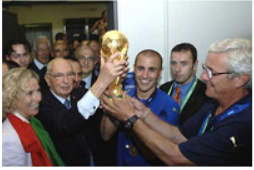

| Привет участникам соревнований | |
|---|---|
ФУТБОЛФутбо́л (англ. football от foot «ступня» + ball «мяч») — командный вид спорта, в котором целью является забить мяч в ворота соперника ногами или другими частями тела (кроме рук) большее количество раз, чем команда соперника. В настоящее время самый популярный и массовый вид спорта в мире. Первые правила игры в футбол были введены 7 декабря 1863 года Футбольной ассоциацией Англии. Сегодня правила футбола устанавливает Международный совет футбольных ассоциаций (IFAB), в который входят ФИФА (4 голоса), а также представители английской, шотландской, североирландской и валлийской футбольных ассоциаций. Последняя редакция официальных футбольных правил датирована 1 июня 2013 года и состоит из 17 правил, вот краткое содержание: Правило 1: Судья Правило 2: Помощники судьи Правило 3: Продолжительность игры Правило 4: Начало и возобновление игры Правило 5: Мяч в игре и не в игре Правило 6: Определение взятия ворот Правило 11: Положение «Вне игры» Правило 12: Нарушения и недисциплинированное поведение игроков Правило 13: Штрафной и свободный удары Правило 14: 11-метровый удар Правило 15: Выбрасывание мяча Правило 16: Удар от ворот Правило 17: Угловой удар |
|
| ГЛАВНОЕ НЕ ПОБЕДА, А УЧАСТИЕ!!! | |